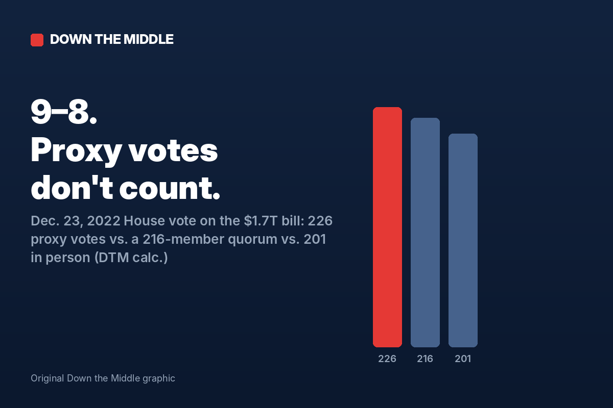
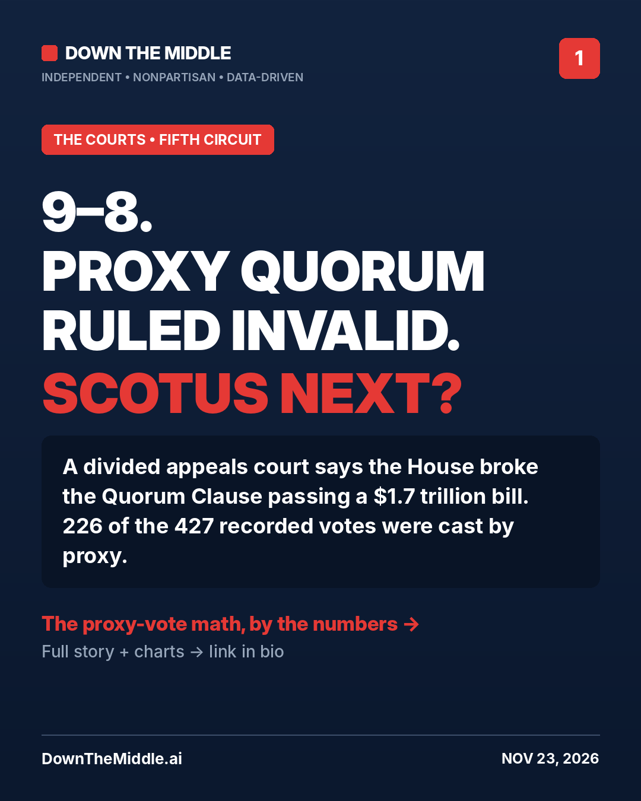
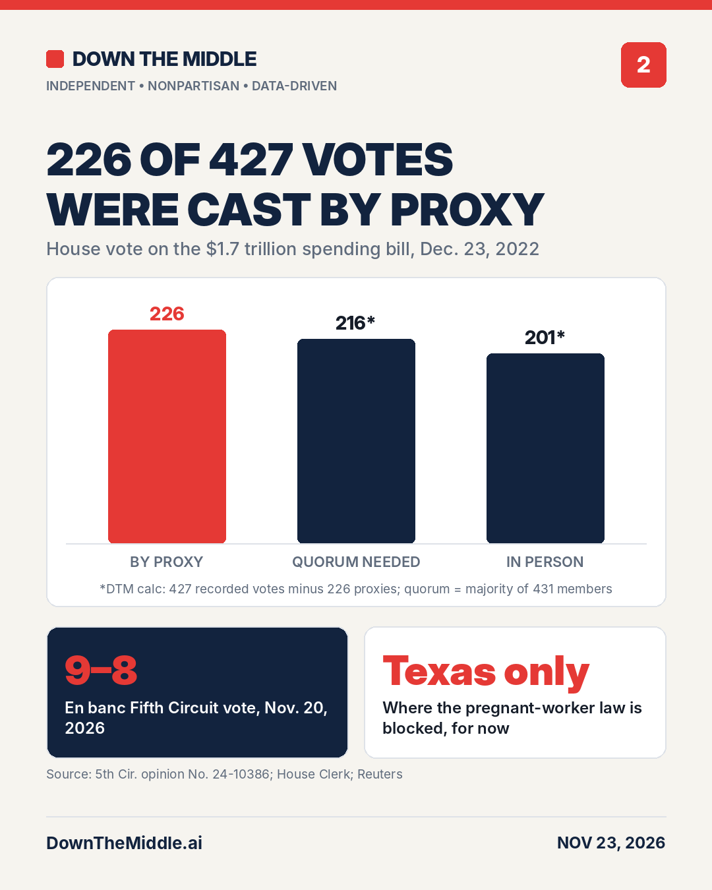

A 9–8 Court Says the House Broke the Constitution in 2022. Here’s the Proxy-Vote Math.
November 23, 2026 · Independent, nonpartisan analysis

A federal appeals court ruled Friday that the House broke the Constitution when it passed a $1.7 trillion spending bill in December 2022, because most of the votes were cast by proxy. [1] [2] The full Fifth Circuit split 9–8. [1] [2] [3] It held that the Constitution’s Quorum Clause requires a majority of the House to be physically present to do business, and that members voting by proxy don’t count toward that majority. [1] [2]
The practical effect, for now, is narrow. The ruling keeps in place an order that bars the Justice Department and the EEOC from enforcing one part of that bill, the Pregnant Workers Fairness Act, against the state of Texas as an employer. [1] [2] [5] The rest of the spending stands. [4] [16] But the court’s reasoning applies to how the House operated for more than two years during the pandemic, and advocates for pregnant workers say they expect the case to reach the Supreme Court. [3] [6] [11]
By the numbers
The documented figures behind Friday’s ruling.
What happened
In May 2020, as COVID-19 spread, the House adopted a rule letting members who couldn’t travel hand their vote to a colleague on the floor. It passed 217–189: every “yes” was a Democrat, and no Republican voted for it. [11] The House kept the rule into 2022 and dropped it after Republicans won the House in that November’s elections. [1] [2]
On Dec. 23, 2022, the outgoing House passed the year-end spending package 225–201, with nine Republicans voting yes and one Democrat voting no. [9] The Senate had passed it 68–29 the day before. [10] Tucked into the 4,126-page bill was the Pregnant Workers Fairness Act, which requires employers to make reasonable accommodations for pregnant workers. [10] According to the court, 226 of the 427 members who recorded a vote did so by proxy, so fewer than half the House was physically there. [1] Rep. Chip Roy of Texas objected on the final vote. [4]
Texas Attorney General Ken Paxton sued in 2023. [3] [12] In February 2024, U.S. District Judge Wesley Hendrix in Lubbock agreed the law was passed improperly and blocked it only for Texas’s own state workers. Paxton called its passage a “stunning violation of the rule of law.” [12] A three-judge Fifth Circuit panel reversed him in 2025. [3] [6] [8] The full court reheard the case and, on Friday, sided with Texas. [1] [2] Judge Cory Wilson wrote that “Members of Congress must be present for quorum purposes.” [1]
Who was in the room on Dec. 23, 2022
Recorded House votes on the final spending bill, compared with a quorum. Hover or tap a bar for the source.
The 226 proxy figure is from the court’s opinion. Down the Middle calculations: about 201 in-person votes (427 recorded votes minus 226 proxies) and a 216-member quorum (a majority of the 431 members serving; the House had four vacancies). [1] [9] Members who were present but did not vote aren’t counted here; the court says less than a majority was physically present. [1]
Insight 1
The House was roughly 15 members short of a quorum in the room
A quorum is a majority of the House. With 431 members serving that day, that’s 216. [9] The roll call shows 427 recorded votes, and the court counts 226 of them as proxies, leaving about 201 cast in person. [1] [9] That’s about 15 short of 216 (our calculation). The bill itself had votes to spare: it passed by 24. [9] So the case was never about whether a majority wanted the bill. It was about whether enough members were in the chamber to count. That’s why the dissent points to how many members took part, while the majority points to how few were physically there. [1] [4]
Insight 2
All 9 judges in the majority were Republican appointees, but 3 crossed over
Every judge in the majority was named by a Republican president: six by President Trump, two by President Reagan and one by President George W. Bush. [1] [15] The eight dissenters were more mixed. Five were named by Democrats (Clinton, Obama and Biden) and three by Bush. [1] [15] The politics outside the courtroom don’t line up neatly, either. The Trump Justice Department kept defending a law Democrats passed. [3] [4] Former Senate Republican leader Mitch McConnell filed a brief, with lawyers including former Attorney General William Barr, arguing courts shouldn’t police the House’s proxy rules, according to an industry outlet’s account. [8]
How the 17 judges split, by who appointed them
Fifth Circuit active judges in Texas v. Blanche. Red shades are Republican appointees; blue shades are Democratic. Hover or tap a segment for names.
Judges’ votes are from the opinion’s header; Judge Haynes wrote a separate dissent and Judge Graves wrote the main dissent. [1] [2] Appointing presidents are from the Federal Judicial Center. [15] Our accounting of the dissent’s membership relies partly on a summary of the opinion; HR Dive reported the vote as 9–7, while the opinion, Reuters and AP report 9–8. [1] [2] [3] [7]
Insight 3
The order covers one law in one state. The reasoning reaches much further.
The remedy is deliberately small: one provision, one state, and only Texas as an employer. [1] [2] A management-side law firm told HR Dive that employers outside Texas should keep complying. [7] But the same bill also carried nearly $47 billion for Ukraine, roughly $38 billion in disaster aid and a change to how Congress counts presidential electoral votes. [10] Election-law scholar Rick Hasen has flagged that electoral-count change as potentially exposed, Beinsure reports. [8] And the House used proxy votes on other bills from mid-2020 through 2022. [2] [11] Pregnant-worker advocates note the Fifth Circuit also covers Louisiana and Mississippi, and the National Women’s Law Center warned the ruling “opens the door to arguments by other states.” [3] [6] [7]
What was in the $1.7 trillion bill
Selected parts of the Consolidated Appropriations Act, 2023. Hover or tap a bar for the source.
Defense and nondefense are regular fiscal 2023 funding, which totaled nearly $1.65 trillion; Ukraine and disaster aid were emergency spending. Ukraine and disaster figures are approximate, as reported by Roll Call. [10] The ruling does not undo any of this spending. [4] [16]
How we got here
Solid dots are documented events. Dashed dots are expected.
- May 15, 2020House
House adopts proxy voting, 217–189, with no Republican votes. [11] - Dec 22, 2022Senate
Senate passes the $1.7 trillion package, 68–29. [10] - Dec 23, 2022House
House passes it 225–201; 226 recorded votes are proxies. [1] [9] - 2023Texas
Paxton sues; the new Republican House drops proxy voting. The pregnant-worker law takes effect in June. [2] [3] [13] - Feb 2024District court
Judge Hendrix rules the law was passed improperly and blocks it for Texas state workers. [12] - 20255th Cir. panel
A three-judge panel reverses. [3] [6] [8] - Nov 20, 20265th Cir. en banc
The full court rules 9–8 for Texas. [1] [2] - NextSupreme Court
Advocates expect an appeal; the Justice Department hasn’t said what it will do. Expected [2] [3] [6]
How each side makes its case
Same ruling, three readings
We describe each position in our own words and check it against the data.
Texas and the ruling’s defenders
- The Constitution says a majority must be present to do business, and a proxy isn’t presence. Congress can’t write around that by rule. [1] [4]
- Conservative outlets frame it as accountability, coming four years after a rushed year-end package. [4] [5]
- The relief is limited to Texas and to one provision, so the government keeps running. [1] [4]
Pregnant-worker advocates and the dissent
- Judge Graves called the majority’s reasoning “illogical, inexplicable, and invalid.” [2]
- A Better Balance calls the ruling “legally unsound and short-sighted” and expects a Supreme Court appeal. [6]
- Advocates warn it puts protections for pregnant workers at risk across the circuit and invites more suits. [3] [7]
What the data shows
- 226 of 427 recorded votes were proxies; about 201 were in person, under a 216-member quorum (our calculation). [1] [9]
- The bill still had majority support: 225–201. [9]
- The law is in use: 1,869 accommodation charges in its first 11 months, and the EEOC’s first five lawsuits under it in fiscal 2024. [13] [14]
Down the middle
Both sides have a real point. The Constitution’s text says a majority “shall constitute a Quorum,” and the records show fewer than half the House was in the chamber. [1] [9] The rule that allowed it passed with no Republican support. [11] On the other side, the House counted those votes under its own rules, a majority voted for the bill, and the law has been on the books for nearly four years, drawing nearly 2,000 accommodation charges in its first 11 months alone. [9] [13] [14] The split on the court wasn’t purely partisan, and the Trump administration has been defending a Democratic law. [1] [3] [15] What’s at stake goes beyond one statute: if the Supreme Court agrees, other laws passed by proxy could face challenges, and the House would have a clear answer on whether it can ever legislate remotely. If it disagrees, Friday’s ruling is a footnote. [3] [8]
What to watch
The Justice Department: whether it asks the Supreme Court to review the ruling. It hasn’t commented. [2] [3] Copycat suits: whether Louisiana, Mississippi or other states bring similar challenges, as advocates fear. [3] [7] Employers in Texas: the order covers Texas as an employer; private employers and workers elsewhere are still covered, attorneys say. [1] [7] Other proxy-era laws: whether anyone sues over other provisions passed the same way, such as the electoral-count changes in the same bill. [8] [10] Congress: lawmakers could re-pass the pregnant-worker law with members in the room; no plan has been reported.
Share it


Sources and primary documents
- [1] U.S. Court of Appeals for the Fifth Circuit (primary document) — Texas v. Blanche, No. 24-10386, en banc opinion (Nov 20, 2026)
- [2] Reuters via Spokesman-Review — US House unconstitutionally passed spending bill in 2022, court rules (Nov 20, 2026)
- [3] AP via NBC DFW — Federal law requiring accommodations for pregnant workers is unconstitutional, appeals court says (Nov 23, 2026)
- [4] RedState (opinion) — Four years later, court rules Biden’s $1.7 trillion bill was passed ‘unconstitutionally’ (Nov 23, 2026)
- [5] Conservative Institute — Fifth Circuit finds House proxy votes on 2022 spending package violated the Constitution (Nov 22, 2026)
- [6] LiveNOW from FOX — Pregnant workers could lose workplace protections after appeals court strikes down law (Nov 22, 2026)
- [7] HR Dive — Congress’ landmark law protecting pregnant workers is unconstitutional, court holds (Nov 23, 2026)
- [8] Beinsure — 5th Circuit proxy voting ruling finds $1.7 tn spending bill unconstitutional (Nov 21, 2026)
- [9] Office of the Clerk, U.S. House (primary data) — Roll Call 549, H.R. 2617, Dec 23, 2022
- [10] Roll Call — House clears omnibus package as end nears for 117th Congress (Dec 23, 2022)
- [11] Office of the Clerk, U.S. House (primary data) — Roll Call 107, H.Res. 965 authorizing proxy voting, May 15, 2020
- [12] Fox News — Federal judge rules $1.7 trillion spending bill passed by Congress in 2022 is unconstitutional (Feb 27, 2024)
- [13] Bloomberg Law — Pregnant worker law spurs nearly 2,000 initial charges to EEOC (Sep 12, 2024)
- [14] U.S. EEOC (primary data) — Annual Performance and General Counsel Reports, FY 2024 (Jan 17, 2025)
- [15] Federal Judicial Center (primary data) — Biographical Directory of Article III Federal Judges
- [16] NBC Palm Springs — Appeals court rules $1.7 trillion spending law unconstitutional over proxy votes (Nov 23, 2026)
The ~201 in-person votes, the 216-member quorum, the 15-member gap and the 24-vote margin are Down the Middle’s calculations from the House Clerk’s roll call and the court’s opinion. Appointing presidents are from the Federal Judicial Center. Ukraine and disaster amounts are approximate as reported. The McConnell brief and Hasen’s view are as reported by Beinsure; we did not review the brief directly.